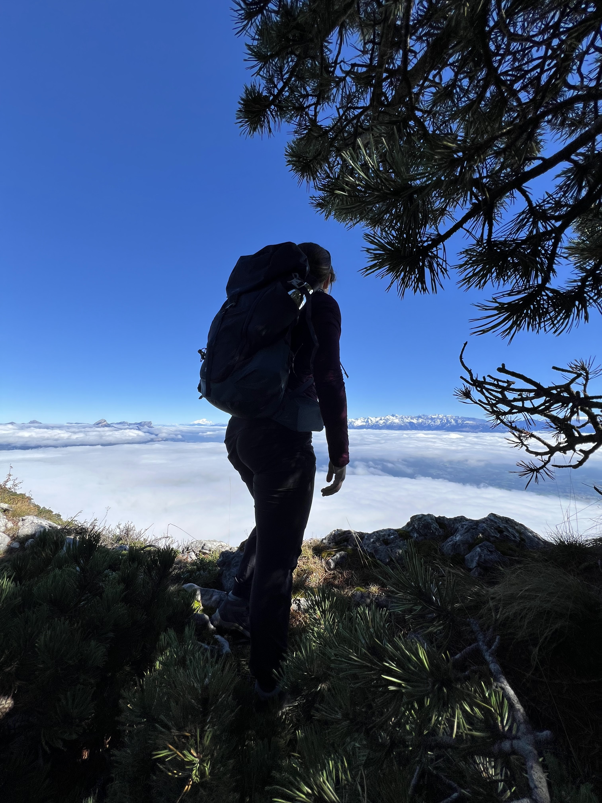
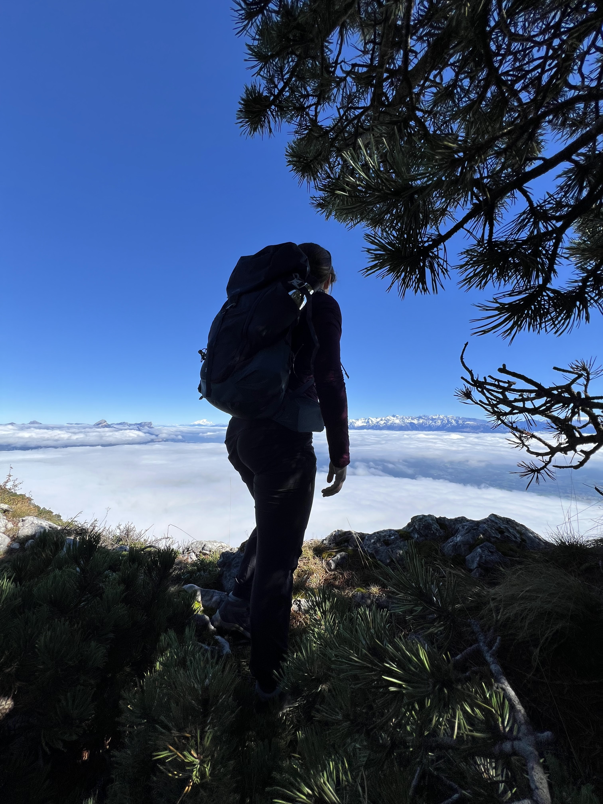

BUT Science des Données
Université Grenoble Alpes
Cours principaux :
- Statistiques et probabilités
- Analyse et visualisation de données
- Python, SQL
- Machine Learning
- Bases de données et data engineering
Étudiante en première année de Master Marketing et Data Analytics, je possède une double nationalité, ce qui m’a permis de développer une forte ouverture culturelle et une grande capacité d’adaptation. Passionnée par l’analyse de données et la valorisation de l’information, j’aspire à transformer les données en leviers d’aide à la décision, notamment dans des contextes marketing et stratégiques.

Lycée – Terminale
Spécialités : Mathématiques et Physique-Chimie
Options : Mathématiques expertes, Euro Anglais
Mention Bien

Avril 2024 – Août 2025
Stage & Alternance – Data Analyst / Data Engineer
Depuis plus de quatre ans, je suis passionnée par les sports d’endurance et de montagne. Ces disciplines m’ont appris la persévérance, la gestion de l’effort et le dépassement de soi. Je pratique notamment le triathlon, le trail et la randonnée, des activités qui reflètent mon goût pour les défis et la régularité.


 

📧 Email : chloe.leyris@etu.umontpellier.fr
💼 LinkedIn :
Chloé Leyris